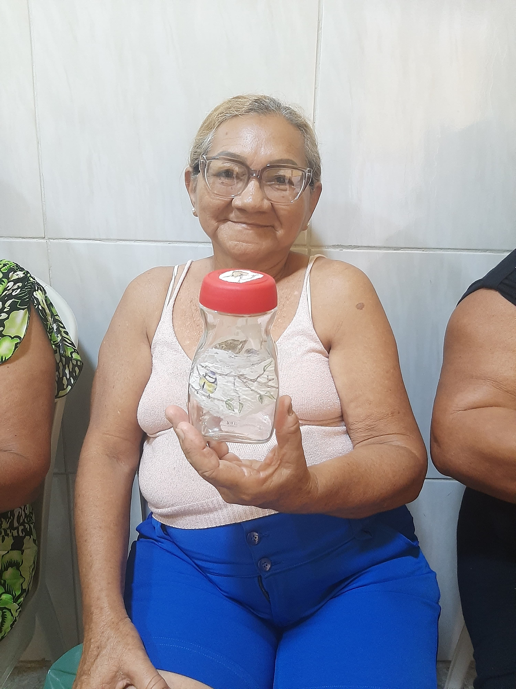

No Instituto Viva Idoso, cada dia é uma nova oportunidade de promover cuidado, afeto e inclusão. Nossa rotina é construída com muito carinho e dedicação, sempre pensando no bem-estar físico, emocional e social de cada idoso que faz parte da nossa história. Nosso dia a dia é guiado pelo compromisso com o bem-estar integral de cada idoso, valorizando sua trajetória, respeitando sua individualidade e fortalecendo sua autonomia.
Em cada novo dia, buscamos criar um ambiente seguro, acolhedor e cheio de significado, onde os laços de amizade se fortalecem e o sentimento de pertencimento floresce. A convivência diária se transforma em uma rica troca de experiências, histórias e afetos que enriquecem a todos que fazem parte da nossa comunidade.
A rotina no Instituto é mais do que uma sequência de ações — é um tempo vivido com leveza, respeito e alegria. É nessa convivência constante que construímos momentos especiais, promovemos vínculos e cultivamos a esperança em cada pequeno detalhe.
Aqui, cada presença é valiosa, cada gesto importa, e cada dia vivido é motivo de celebração. Acreditamos que o envelhecimento pode e deve ser vivido com alegria, dignidade e propósito. É por isso que cada gesto, sorriso e cuidado faz parte de um dia a dia cheio de vida e significado.
